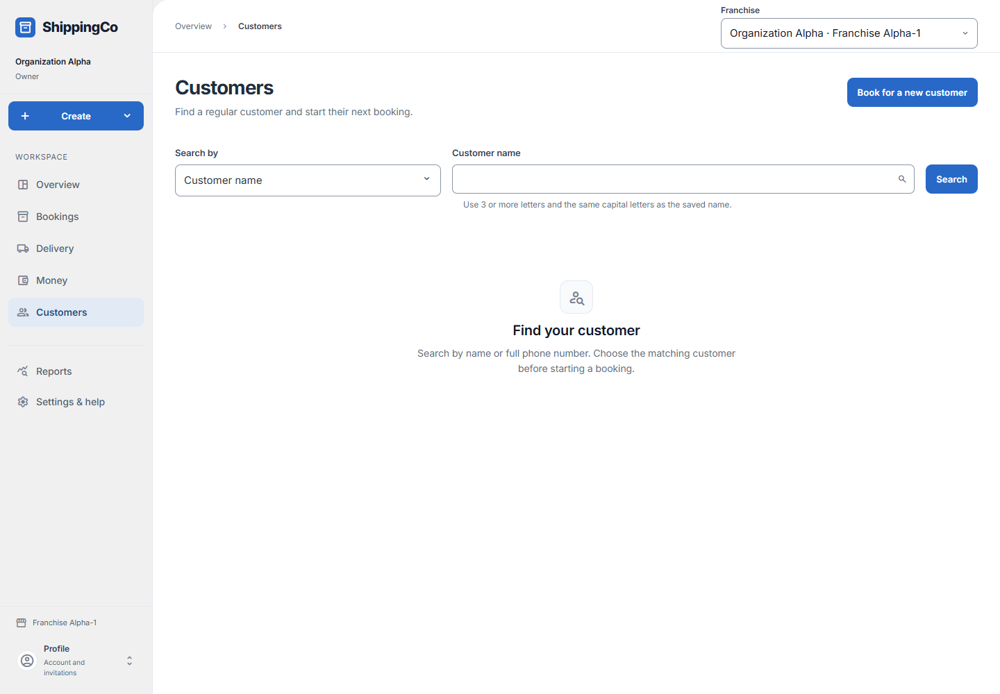

Find a customer
What this helps you do
Reuse the right customer details and avoid selecting the wrong person.
Before you start
Sign in and choose the correct branch. Your access decides which actions you can use.
Search, check the match and continue
- Open Customers. Search by Customer name requires at least three letters and the same capital letters as the saved name. Search by Phone number requires the full phone number with country code. Select Search after entering it.
- Changing Search by clears the previous query and selection. Typing a new query also clears the selected customer. Select Search to load the new results; Clear search starts again.
- Results show customer name, displayed phone and saved address. Not provided means the address is missing. Use Load more customers when more matches are available.
- Select View beside the correct name. The selected customer panel repeats the phone and address so you can check the match before continuing. Matching a phone number alone is not proof of identity.
- New booking for the selected customer opens booking entry with that customer selected. View bookings opens the Packages list for that customer. Customer accounts is available only if your role can read accounts.
- Book for a new customer opens a fresh booking when the person is not yet saved. A failed search is not a new-customer confirmation: retry the lookup or check spelling and branch first.
Quick steps
- Open Customers.
- Choose Search by: Customer name or Phone number.
- Enter the search and select Search.
- Select View beside the correct customer. Check the phone and address.
- Choose New booking for that customer or View bookings.

Current app screen with synthetic review data. Names, references and amounts are examples, not customer records. Select the image to enlarge it.Fields and choices
- Search by: Choose name or phone.
- Customer name: Use at least three letters. Match the capital letters in the saved name.
- Phone number: Use the full phone number with country code.
What to check
- If nothing matches, check the spelling and phone number. You can create the customer during a new booking.
- A phone number alone does not prove someone’s identity.
- Clear search to start again.
About this guide
Checked against the web app source on 1 November 2026. Examples are not real business records.